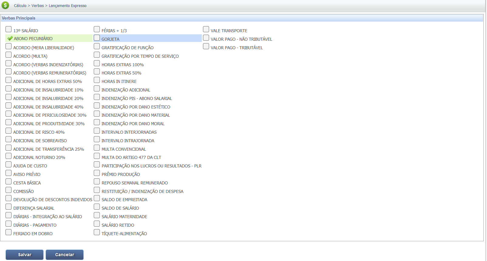
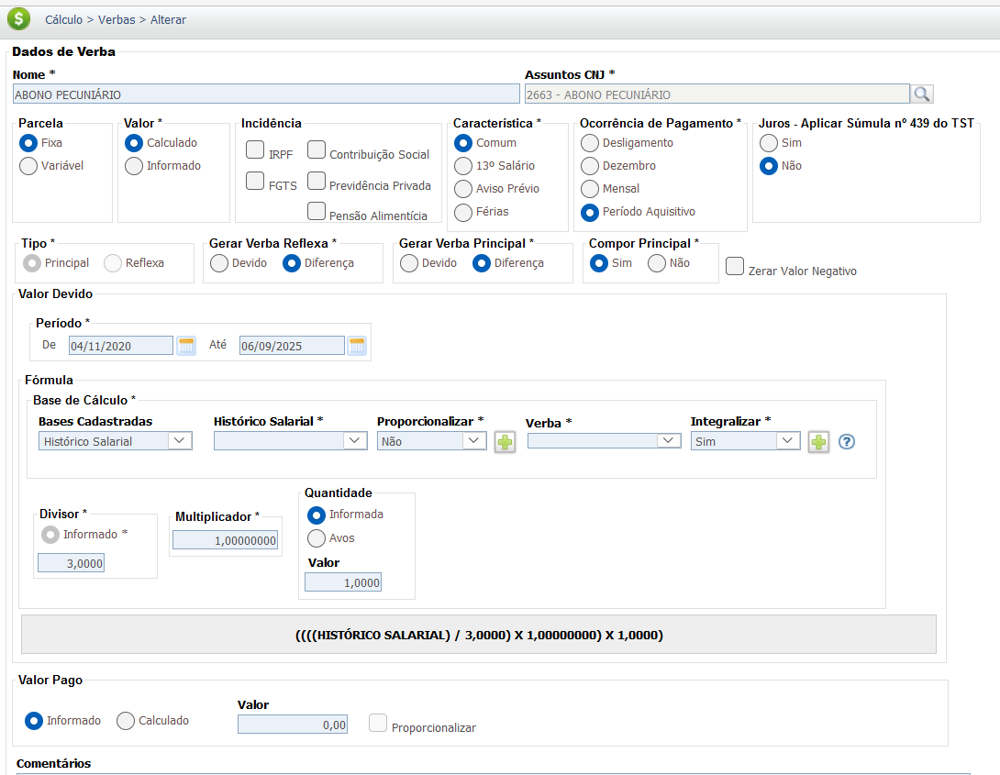
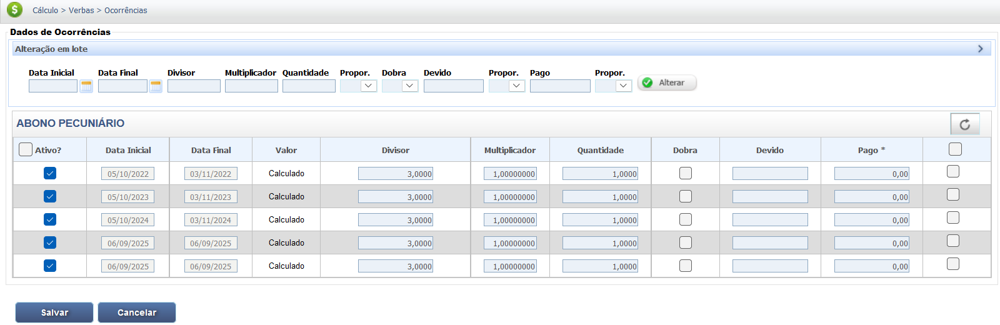

Abono Pecuniário de Férias (Venda de 1/3)
O Abono Pecuniário é a faculdade concedida ao empregado de converter 1/3 (10 dias) do seu período de férias em dinheiro, conforme previsto no Art. 143 da CLT. Este valor é tratado como verba indenizatória e é isento de encargos sociais e fiscais.
Prazo de Pagamento
O pagamento do abono pecuniário deve ser feito até **dois dias antes do início do gozo das férias** (Art. 145 da CLT).
Base Legal e Jurisprudência
A legislação e a jurisprudência definem o direito de conversão de 1/3 das férias em dinheiro.
Fontes Normativas
Consolidação das Leis do Trabalho (CLT):
- Art. 143 da CLT:
Permite ao empregado converter 1/3 do período de férias em abono pecuniário, mediante requerimento até 15 dias antes do término do período aquisitivo.
- Art. 145 da CLT:
Estabelece que o pagamento do abono pecuniário deve ser feito até 2 dias antes do início do gozo.
Jurisprudência
Abono Pecuniário de Férias
Súmula nº 328 do TST:
O abono de férias deve ser calculado sobre a remuneração das férias, sem a incidência do adicional de 1/3 constitucional.
Base de Cálculo e Deduções
IMPORTANTE: O Abono de Férias possue natureza indenizatória. Portanto, não há incidência de Imposto de Renda Retido na Fonte (IRRF) ou contribuição para o Instituto Nacional do Seguro Social (INSS).
Cálculo e Natureza Jurídica do Abono Pecuniário
O abono pecuniário (venda de 1/3 das férias) é calculado sobre o valor da remuneração das férias
(salário base mais médias) sem a incidência do adicional de 1/3 constitucional
(Súmula nº 328 do TST).
Abono Pecuniário Bruto = Valor das Férias Base
(Sem 1/3) / 3
Verbas Reflexas
Por ter natureza indenizatória, o Abono Pecunário não causa reflexos sobre outras verbas.
Calculadora (Simulação)
Use a calculadora abaixo para estimar o valor bruto do Abono Pecuniário (venda de 1/3).
Cálculo Simples (Bruto do Abono)
Este cálculo estima o valor bruto do Abono Pecuniário, com base no salário e sem a incidência do 1/3 constitucional.
Lançamento no PJe-Calc
A seguir, confira o passo a passo para o lançamento da verba no PJe-Calc, utilizando a opção "Expresso":
-
Acessar Verbas e Escolher Lançamento: No menu de
navegação à esquerda, clique na opção Verbas para iniciar o lançamento. Após o
comando,
será exibida a tela para escolha do Lançamento da Verba. Escolha a opção Expresso.

- Seleção da Verba: O sistema abrirá as opções de verbas, escolha a verba Abono Pecuniário e clique no botão Salvar 
-
Quadro de Verbas e Ações: O sistema exibirá um quadro
com os campos:
- Ações - contendo as opções de configurações da verba selecionada (parâmetros,
ocorrências e
exclusão)

-
- Parâmetros da Verba

-
- Ocorrências da Verba

-
- Excluir

- Verba Principal - verba selecionada para lançamento.
- Verba Reflexa - em que ao clicar no botão Exibir serão listadas todas as verbas reflexas ligadas a Verba Principal.
- Parametrização da Verba: Ao clicar no botão Parâmetros da Verba serão exibidas todas as configurações necessárias para a parametrização da Verba Principal. 
- Registro de Ocorrências: Ao clicar no botão Ocorrências da Verba serão exibidas todas as configurações necessárias para registro das ocorrências da Verba Principal. 